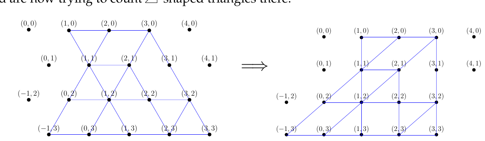

ACM ICPC World Finals 2018
Shortest judge solution: 2136 bytes. Shortest team solution (during contest): 1824 bytes.
Let us focus on counting 4-shaped triangles – a solution for that easily generalizes to 5-shaped triangles (e.g., we can simply turn the entire picture upside down and then count 4-shaped triangles again). There are many reasonable coordinate systems one can pick for the grid, but for the purposes of this discussion, let us apply the one shown on the left below, where points (x, y) with a fixed x-coordinate correspond to a negative-slope diagonal. Shifting the rows horizontally to make these diagonals vertical, we get the picture shown on the right, and are now trying to count 4-shaped triangles there.

Now we process the grid row by row, then column by column. For each point (x, y), we compute the following quantities:
Computing these in constant time for each new grid square is easy, e.g. if the horizontal edge between (x − 1, y) and (x, y) exists then L(x, y) = 1 + L(x − 1, y) (and we have already computed L(x − 1, y)) otherwise it is 0.
To compute the number of triangles with lower right corner at (x, y), we would now like to answer the following type of queries: let s = min(L(x, y), U(x, y)). For how many values of i between 1 and s (inclusive) does it hold that D(x − i, y) ≥ i? Each such i means that we have the triangle between (x − i, y), (x, y), and (x, y + i), and you should convince yourself that these are indeed the only triangles with lower right corner at (x, y).
A naive way of answering these queries would be to simply loop over all i from 1 to s, but this results in Ω(n3) time and should time out (where for notational simplicity we here use n = r + c to denote the side lengths – technically the bound is a bit inaccurate and it is actually Ω(r · c · min(r, c)) time but the worst case is when the grid is quadratic and we will just give bounds in terms of n). However, fixing this is a not too difficult dynamic data structure exercise involving some form of range queries. As a concrete suggestion, suppose that when processing a row y we keep an additional array A(x), where, when we are at point (x, y) the value of A(x0) for x0 < x is 1 if D(x0, y) ≥ x and 0 otherwise. In other words, when we process (x, y) we set A(x) = 1, and after we have processed (x + D(x, y), y) we set A(x) to 0 (which we do by keeping a list for each x coordinate of which A-values should be zeroed out after we have processed this x coordinate). Now the number of i’s between 1 and s such that D(x − i, y) ≥ i equals the sum of A(x0) from x0 = x − s to x0 = x − 1. Doing updates to the A array while being able to answer partial sum queries like that is exactly what a Fenwick tree does, in O(log n) time per update and per query. This results in an O(n log n) time per row or O(n2 log n) time in total for the entire grid.
This problem had rather tight time limits, so one did need to be careful about constant factors in the implementation, and to make sure not to waste too much time on reading the input. The reason for this was not that we really wanted teams to make the best implementation, but simply that a reasonably optimized Ω(n3) solution was rather fast for the grid size used (which already results in rather large input files, so we were hesitant to increase it even further), and we did want the Ω(n3) solution to time out (the n3 solutions we had were about 80% slower than the time limit and we wanted a decent margin to account for teams being better at low-level optimizations than us). Ultimately, we did succeed in preventing n3 time solutions, but we also timed out several n2 log n solutions forcing teams to optimize their constants a bit too much.